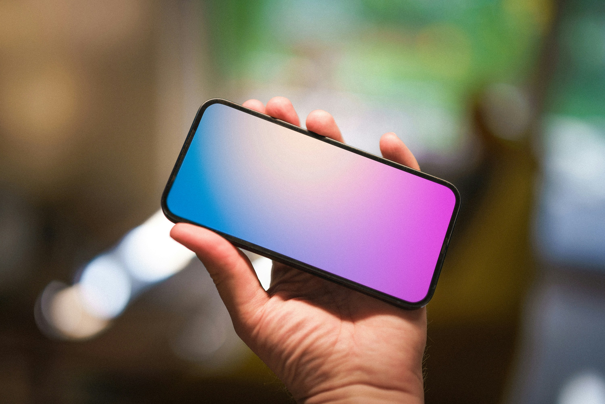

Telefonunuzda bu uygulama varsa, bilgileriniz ele geçmiş olabilir!
Geçtiğimiz hafta içerisinde gerçekleştirilen Made by Google etkinliğiyle yeni nesil Pixel cihazlarını basına tanıtan ve çok yakın zamanda hepsini piyasaya sürmeyi hedefleyen Google, yeni bir gündemle çalkalanıyor.
Buna göre 2017’den beri piyasaya sürülen birçok Pixel serisi telefonda yer alan büyük bir güvenlik açığı ortaya çıktı.
Google Pixel cihazlar ne kadar tehlikede?
Teknoloji devi Google, son zamanlarda piyasaya sürdüğü Pixel serisi akıllı telefonlarıyla övünürken, şimdi de büyük bir skandalla sarsılıyor.
2017 yılından bu yana milyonlarca kullanıcının cebine giren Pixel cihazlarında, adeta bir truva atı gibi gizlenmiş tehlikeli bir yazılım tespit edildi.
Mobil güvenlik firması iVerify’ın yaptığı araştırmaya göre, “Showcase.apk” adlı bir Android uygulaması, Pixel telefonlara fabrika çıkışlı olarak yüklenmiş durumda.
Ancak bu masum görünümlü uygulama, aslında resmen bir kara kutu gibi sistem düzeyinde kod çalıştırma ve cihaza istediği uygulamayı yükleme gibi normalin çok ötesinde yetkilere sahip.
iVerify’ın Palantir Technologies ve Trail of Bits ile birlikte yayınladığı rapor, durumun ciddiyetini gözler önüne seriyor.
Raporda, uygulamanın güvenli olmayan bir bağlantı üzerinden indirdiği yapılandırma dosyasının kolayca manipüle edilebileceği ve bunun sonucunda cihazın tamamen ele geçirilebileceği belirtiliyor.

Asıl bomba ise uygulamanın kimliğinde gizli. ‘Verizon Retail Demo Mode’ olarak bilinen bu yazılım, lokasyon ve harici depolama gibi neredeyse 30’dan fazla farklı izne sahip.
Reddit ve XDA Forums’da yapılan paylaşımlar, bu uygulamanın 2016 yılından beri Pixel cihazlarda var olduğunu gösteriyor.
Google şu ana kadar konuyla ilgili resmi bir açıklama yapmadı.
Ancak kullanıcılar arasında endişe ve öfke giderek artıyor. Şirketin çok yakın bir dönemde detaylı bir açıklama yaparak konuyla ilgili bilgilendirme yapması bekleniyor.
Yazar: Enes Koyuncuoğlu
Yazarın diğer haber yazılarına bu linkten erişebilirsiniz.